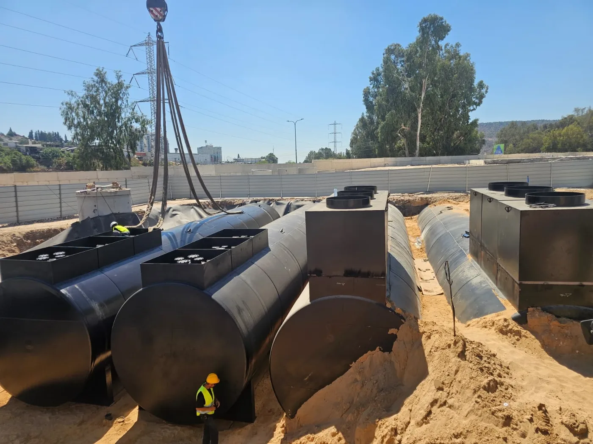
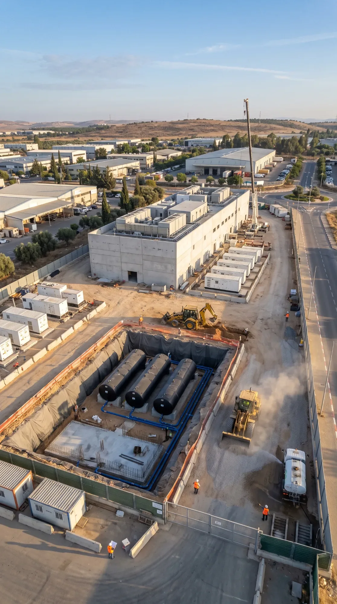
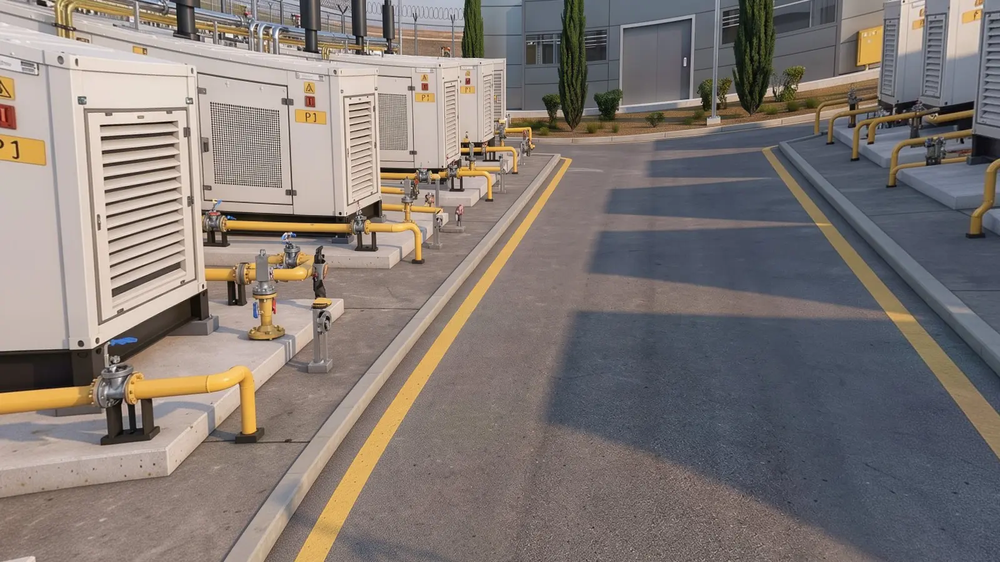

- ראשי
- תחומי פעילות
- חוות שרתים
תשתיות דלק וגנרטורי חירום לחוות שרתים, כשההספק לא יכול ליפול

מתחנת דלק לחוות שרתים
חוות שרתים מגובה בגנרטורי חירום, והגנרטורים תלויים בתשתית הדלק: מיכלי אחסון גדולים, מיכלי יום ליד כל גנרטור, וצנרת הזנה שחייבת להמשיך לעבוד גם כשקו אחד יוצא מכלל שימוש. זו אותה הנדסה של תחנת דלק, בקנה מידה גדול יותר ועם דרישת אמינות שאין בה מקום לטעות.
הניסיון של עשרות שנים בתחנות דלק, מיכלים בדופן כפולה, צנרת אטומה ובדיקות מתועדות, הוביל אותנו לתחום הזה. אנחנו עובדים בתיאום עם יועצי החשמל, המתכננים והרגולציה, ומוסרים תשתית שנבדקה קטע אחר קטע.

הדמיה · חוות שרתים בשוהם: בור המיכלים, חצר הגנרטורים והמבנהמהמיכל ועד הגנרטור, בלי נקודת כשל אחת
למסלול הדלק בחווהעקבו אחרי הדלק, מהמיכלית ועד הגנרטור
חתך של אתר טיפוסי ושבעה שלבים במסלול הדלק. כל שלב הוא עבודה שאנחנו מתכננים, מבצעים, בודקים ומתעדים.

עמדת מילוי ופריקה
הנקודה שבה המיכלית מתחברת. אם לא מתכננים אותה נכון, כאן קורות רוב הדליפות.
- גישה ותמרון למיכלית בלי לחסום את החווה
- שוחות מילוי אטומות עם מגן גלישה
- מפריד דלק וניקוז לרחבת הפריקה
- מדידת מלאי רציפה וזיהוי דליפות
מיכלים תת־קרקעיים
מיכלי הדלק הראשיים של החווה, קבורים בבור בטון.
- מיכלי פלדה בדופן כפולה עם ניטור של החלל שבין הדפנות
- הנפח נגזר משעות הגיבוי שהחווה מגדירה, לא להפך
- אוכפים, עיגון ומילוי חול לפי מפרט היצרן והתקן
- שוחות ונקודות מדידה נגישות מעל כל מיכל
צנרת הזנה
הקו שמחבר את המיכלים לגנרטורים. נבדק לפני שמכסים, ומתועד לעשרות שנים קדימה.
- צנרת בדופן כפולה בתוואי מתוכנן ומתועד
- קווי הזנה וחזרה נפרדים
- בדיקות לחץ ואטימות לפני הכיסוי, עם פרוטוקול
- סימון בשטח ותוכניות עדות (As-Made) במסירה
חדר משאבות ובקרה
הלב של המערכת. כאן מוודאים שהדלק מגיע גם כשמשהו נופל.
- משאבות הזנה ביתירות N+1
- מעקף ידני למקרה של תקלת בקרה
- בקרת מפלסים והתראות לחדר הבקרה של החווה
- ניתוק חירום נגיש מחוץ לחדר
מיכלי יום
מיכל קטן ליד כל גנרטור, כדי שהשעות הראשונות של הפסקת החשמל לא יהיו תלויות בשום דבר אחר.
- נפח לפי שעות הריצה הראשונות של הגנרטור
- מילוי אוטומטי מהמיכלים הראשיים
- הגנת גלישה וקו חזרה
- מאצרה ואיסוף נזילות
גנרטורי החירום
נקודת הסיום של המסלול, וההוכחה שהכול עובד.
- חיבור הדלק לכל גנרטור, כולל הנפרדים
- תיאום מלא עם יועץ החשמל וספק הגנרטורים
- בדיקת הרצה תחת עומס לפני המסירה
- תיק מתקן: תוכניות, בדיקות ופרוטוקולים
בטיחות ואיכות סביבה
מה שלא רואים אחרי הכיסוי, אבל קובע אם המתקן יעמוד בביקורת בעוד עשר שנים.
- איטום הבור ויריעות הגנה על הקרקע
- הגנה קתודית וחשמל סטטי
- תקני המשרד להגנת הסביבה ומשרד העבודה
- תוכנית בדיקות תקופתיות ותחזוקה מסודרת
החתך הוא הדמיה של אתר טיפוסי, לא פרויקט ספציפי. בכל פרויקט התצורה נקבעת יחד עם יועץ החשמל, ספק הגנרטורים והרשויות.
חוות גנרטורים, מבפנים
חמש נקודות באתר טיפוסי: חצר הגנרטורים, חוות המכלים, עמדת הפריקה, חדר המשאבות ואולם הגנרטור. גררו כדי להסתכל מסביב, ועברו בין הנקודות ברשימה או בחצים.

הדמיהמה כוללת תשתית הדלק
- בורות ובסיסיםחפירה, יריעות איטום, עיגון ובסיסי בטון למיכלים ולציוד.
- מיכלים תת־קרקעייםמיכלי אחסון בדופן כפולה, הנפה, הנחה וחיבור.
- מיכלים עיליים ומיכלי יוםמיכלים עיליים על מסגרות פלדה ומיכלי יום ליד הגנרטורים.
- צנרת הזנה N+1קווי הזנה כפולים כך שכל יחידה ממשיכה לקבל דלק גם כשקו אחד מושבת.
- משאבות העברה ושסתומיםמערכות העברה, מערכות שסתומים ומילוי.
- גילוי דליפות וניטורחיישנים, ניטור מיכלים וחיבור למערכות הבקרה של האתר.
- בדיקות ותיעודבדיקות לחץ ואטימות לכל קטע, עם תיעוד למסירה.
- תיאום מקצועיעבודה מול יועצי החשמל, המתכננים והרגולציה לאורך כל הפרויקט.
מהבור ועד החיבור לבקרה, בחמישה שלבים
- 01תכנון ותיאום
לימוד תוכניות החשמל והגנרטורים, תיאום עם היועצים ותכנון סדר ביצוע.
- 02בורות ובסיסים
חפירה, יריעות איטום, בסיסי בטון ועיגון.
- 03מיכלים
הנפה, הנחה וחיבור של מיכלי האחסון, המיכלים העיליים ומיכלי היום.
- 04צנרת הזנה
קווי הזנה בתצורת N+1, משאבות, שסתומים וגילוי דליפות.
- 05בדיקות וחיבור לגנרטורים
בדיקות לחץ ואטימות מתועדות, חיבור מיכלי היום לגנרטורים ולמערכות הבקרה, ומסירה.
פרויקט חוות שרתים: מיכלים, מיכלי יום וצנרת הזנה
בין לקוחותינו חברת ענן בינלאומית, שעבורה ביצענו פרויקט חוות שרתים. העבודה בתחום כוללת, כפי שרואים בתמונות שבעמוד, הנחת מיכלי אחסון גדולים בבור על יריעת איטום, הנפת מיכלים במנוף, מיכלים עיליים על בסיסי בטון, מערכות שסתומים וצנרת הזנה, ועבודות ריתוך וחיבור באתר.
רוצים להבין איך בנויה מערכת הגיבוי? קראו את המאמר על גנרטורי חירום לחוות שרתים. לכל הפרויקטים
חוות שרתים מהשטח
שאלות על תשתיות דלק לחוות שרתים
מה זה תצורת N+1 בצנרת הזנה?
כל יחידה מקבלת דלק משני קווים לפחות, כך שאם קו אחד יוצא מכלל שימוש, לתחזוקה או לתקלה, הגנרטורים ממשיכים לקבל דלק.
האם אתם עובדים עם יועצי החשמל של האתר?
כן. תשתית הדלק מתוכננת ומבוצעת בתיאום עם יועצי החשמל, המתכננים והרגולציה, ומחוברת למערכות הבקרה של האתר.
מה ההבדל בין מיכל אחסון למיכל יום?
מיכל האחסון הוא המאגר המרכזי, בדרך כלל תת־קרקעי ובדופן כפולה. מיכל היום קטן יותר ויושב ליד הגנרטור, ומוזן ממיכל האחסון דרך צנרת ההזנה.
מתכננים חוות שרתים? נעבור על התוכניות
שלחו לנו את פרטי הפרויקט ונחזור אליכם לשיחה קצרה. נשמח לעבור על תוכניות החשמל והגנרטורים לפני הצעת המחיר. או ישירות למשרד: 08-622-9307